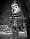

پذيرش > كوچه به كوچه > در جدال با پینوکیو
 به سوی خیابان های آفتابی و مردم بیرون سیرک به سوی خیابان های آفتابی و مردم بیرون سیرک

 در جدال با پینوکیو در جدال با پینوکیو
12 آبان 1387 - تارا نجد احمدی - نسخه قابل چاپ
هیچ وقت در را که باز می کند، به من نگاه نمی کند، به کفش هایم اشاره می کند و می گوید همانجا درشان بیار! همانجا درشان می آورم و نیمه معذب وارد خانه ای میشوم که سال هاست تنها مهمانش من هستم. به آشپزخانه می رود و من سرگرم تماشای تابلوهای تقلبی و نقاشی ها و عکس های جدیدی می شوم که به دیوارها اضافه کرده است. مجسمه های هندیش، گیاهان سبزعجیب و زیرسیگاری های پرش در همه جای اتاق.
از آشپزخانه با لیوان های چای بیرون می آید، کمی مشکوک نگاه می کند، از این که برای چند دقیقه من را با وسایلش تنها گذاشته احساس خوبی ندارد. کتابی نیمه باز را از روی میز برمی دارد و طوری که عنوانش را نبینم زیر صندلی می گذارد.
می پرسد: چطوری؟
 خوب خوب
چه خبر؟
هیچی
چایش را با دو تا از شیرینی های بزرگ روی میز به سرعت می خورد و دامنش را می تکاند. از اوضاع کارش می پرسم، اول می گوید به تو ربطی ندارد، بعد بلافاصله شزوع می کند به تعریف کردن، بدون مکث و با صدای بلند، یکی دو بار که نظرم را می گویم نشنیده می گیرد و به حرفش ادامه می دهد. وقتی حرف می زند چشم هایش می درخشند و پوزخند از روی لبش کنار نمی رود. همزمان یا سیگار می کشد یا پشت دستش را می خاراند. وقتی حرفش تمام می شود مکث کرده و می گوید راستی من باز هم پین می خواهم، از اون آبی ها، می گویم تمام شده، به کیفم اشاره می کند و می گوید پس فعلا این دو تایی که روی کیفته رو بده من و به سرعت تا کیفم چهار دست و پا می رود، پین ها را باز کرده، در جیب پیراهنش می گذارد و دوباره به آشپزخانه برمی گردد، من رو به تلویزیون خاموش می نشینم و خودم را باد می زنم.
...
صدای ظرف های ناهار می آید و برای کمک به آشپزخانه تاریکش می روم. غذا که می خوریم حرف نمی زند و وقتی ظرف های ناهار را می شورم پشت سرم می ایستد و سیگار می کشد. بعد از ناهار وقتی روی مبل لم می دهم و آماده چرت زدنم ناگهان با یک عینک آفتابی و روسری می آید جلویم می نشیند: چطوره؟
قشنگه
اگه دوست داری برای تو هم از این روسری ها بگیرم؟
نه، مرسی
روسری و عینک را در می آورد و می گوید: خوب تو بگو چه خبر، امضاها چطورند؟
کلمه امضا خواب را از سرم می پراند، بلند می شوم و صاف می نشینم.
چند تا شده؟
اعلام نشده، فعلا کامل شمارش نشده
می گوید: برای من از این بازی ها در نیار! راحت بگو تعدادشون کمه.
کمه
خوب با این همه فشار طبیعیه، مگه هنوز هم جمع می کنی ؟
آره
جدی؟
مصیبت زده چند ثانیه سکوت می کنم و نهایتا به دستشویی فرار می کنم.
مدتی بعد یک عذر خواهی رسمی می کند و می گوید: "من حتما باید نیم ساعت چرت بزنم وگرنه تا شب سگم"، پوزخندم را که می بیند جمله اش را اصلاح کرده و با غرور تهدید می کند: " اگر نخوابم سگ تر از همیشه می شوم" و به اتاقش می رود، در را قفل می کند، دقایقی بعد خرو پف ترسناکش خانه را می لرزاند.
از فرصت استفاده می کنم، سریع آن لاین میشوم و نگاهی به ای میل ها و سایت ها می اندازم. بی وقفه و پوچ میل باکسم هر روز مورد تهاجم است. بیشترشان اسپم هایی است با عناوین نیمه اجتماعی نیمه سیاسی با لحن های نیمه انقلابی نیمه کارتنی وطنز از کسانی که نمی شناسم. بقیه هم بحث های فرسایشی و کشنده درونی گروه ها و افراد شوخ طبع و نکته سنجی است که در ای میل های جمعی بر سر و کله هم می کوبند؛ یکی طلبکار به دیگری میل زده که چرا فلان کار را نکردی و او هم جواب داده چون الآن سفرم و مثلا از یک کافی نت در جنگل آن لاین شده ام، هر وقت برگردم انجامش می دهم. دو نفر در یک میل دیگر خرخره هم را جویده اند و آن سومی هم که با لحن مهربان سعی کرده فضا را آرام کند هزار و یک طعنه و کنایه زده و از هردوشان بدتر و تصنعی تر است. یکی سند فلان مکان را به اسم خودش زده، یکی سند فلان کار را.
یکی که مثلا از همه با ادب تر است از همه بدتر فحش می دهد و در نوشته هایش لابه لای تلاشش برای فرهیخته جلوه کردن هر ازگاهی حباب حرص و کینه بالا می پرد، یکی که قبلا به فلک می بست حالا کتاب هایی که خلاصه کرده را به سر و روی دیگران پرت می کند. عده ای ساکت نشسته اند و ای میل های همدیگر را برای روز مبادا آرشیو می کنند تا اگر لازم شد علیه آن دیگری استفاده اش کنند یا احیانا درباره شان کتابی بنویسند... پژوهش های باسمه ای، ادعاهای باسمه ای، استدلال های باسمه ای.
فضای سایت ها به سیرکی مجازی تبدیل شده است. سیرک بنفش و گریز ناپذیری پر از بازی و جادوگر و ماسک وحقه های نمایشی برای تماشاچیان. چند نفری که عصا در دست دارند مسابقه می دهند تا دیگران را غیب کرده یا از خودشان چند تا تکثیر کنند. برخی بلند گو و شلاق در دست گروه اسب های تک شاخ و گورخرهای بال دار را دور پیست می دوانند. کتاب ها به هویج تبدیل می شوند، قلم ها به سرنگ، واژه ها به نردبان، تئوری ها به کشک، داوطلبان به مرغ بریان، اکتیویست ها به ماشین تایپ ... دلقک ها هم به طرز خستگی ناپذیری روی تشک فنری بالا پایین می پرند تا دستشان به بالاترین حلقه چادر برسد. بندباز عینکی بی وقفه تراکت های کلاس خصوصی دلقک بیست دقیقه ای را روی سر تماشاچیان می ریزد: چگونه در بیست دقیقه دلقکی حقیقی جلوه کنیم! چرا دردسر مطالعه؟ لذت واقعی همینجاست! حرف از شما، کار از بقیه! شما هم می توانید معروف شوید! امتحان کنید و ببینید چقدر کیف می دهد!
و پینوکیوها مسحور جلو می دوند...
...
ناگهان می بینم دو تا سر هستیم که به مونیتور خیره شده ایم. می گوید از بس سرو صدا کردی خوابم نبرد و چشم هایش همچنان متن یک نوشته را دنبال می کند. سریع می گویم با کارت اینترنت خودم وصل شده ام، از مال تو استفاده نکردم و صفحه را می بندم، سیرک پرهیاهو در ثانیه ای به منظره سبز و بی دغدغه دسکتاپ کامپیوتر تبدیل می شود.
می گوید چرا بعضی از این نویسنده ها این قدر خودشیفته اند؟ دوست دارند به هرشکلی خودشان را مطرح کنند.
این قدر درست می گوید که جوابی ندارم .
می گوید همه جا پر شده از"من، من، من". این سایت و اون سایت هم نداره، همه سایت ها، یکی کم تر یکی بیشتر، این شکل نوشتن که کاری نداره! اثری هم نداره...
باز هم این قدر درست می گوید که ساکت می مانم.
و بعد اضافه می کند اگر فرصت کردی یک شانه هم به موهات بزن! دستت درد نکنه! و ناخودآگاه دستی به موهای سفید و خرمایی خودش می کشد.
در حینی که با ناخن گوشه رومیزی را خراش می دهم و او سیب گاز می زند تلفن زنگ می زند و به اتاق دیگری می رود. صدایش را می شنوم که موقع حرف زدن متناوبا می خندد و عصبانی می شود. می خندد و عصبانی می شود.
مدتی بعد خانه اش را ترک می کنم، در سکوت و تاریکی ماشین بی حرکت می نشینم و به بی فایده بودن تلاشم برای پر کردن تنهاییش فکر می کنم، به فرار آگاهانه اش از برقراری رابطه با دیگران ...در صدای خش دارش و پشت پلک های پف کرده اش، در صراحت و تنهاییش، در تلنگرهای بی رحم و سردش و در بد بینی ذاتیش، بصیرت و رنجی نهفته است که همواره مبهوتم می کند. فاصله ای که هرگز طی نخواهد شد، شکلی از حیات که به من نزدیک نمی شود...
در راه، دلتنگ وحسرت آلود؛ به خیابان های آفتابی و مردم بیرون سیرک فکر می کنم، به امضاهایی که نگرفته ام.
ارسال به
بالاترین
،
توییتر
،
فریندفید
،
فیسبوک
در همين بخش :
 روايت بيست و پنجمين شهريور / نرگس طیبات روايت بيست و پنجمين شهريور / نرگس طیبات
وقتی آتش خاموش شود/فرشته نوبخت
آن گاه که زن شدم / ویژه نامه 8 مارس 1391
چیزی زیر پوست این شهر می جوشد / دلارام علی
گرسنگی / وبلاگ سیب و سرگشتگی
ديگر بخش ها :
طرح یک میلیون امضا
|
مقالات
|
سایت نوشته ها
|
اخبار
|
گزارش كمپين
|
گفت و گو
|
علیه سکوت
|
كوچه به كوچه
|
نامه های شما
|
گزارش ویژه
|
گفتگو با اعضا
|
ویژه سالگرد کمپین
|
تصویر برابری
|
دل آرام علی
|
تریبون
|
مقالات
|
تاریخ شفاهی
|
خارج از چارچوب
|
کتابخانه
|
درباره کمپین
|
کمپین در شهرها
|
کمپین در بند
|
صدای تغییر
|
ویژه 22 خرداد
|
لایحه حمایت از خانواده
|
گالری
|
عشا مومنی
|
امیر یعقوبعلی
|
خدیجه مقدم
|
راحله عسگری زاده و نسیم خسروی
|
پروین اردلان،جلوه جواهری، مریم حسین خواه، ناهید کشاورز
|
زینب پیغمبرزاده
|
سعیده امین، سارا ایمانیان، محبوبه حسین زاده، ناهید کشاورز و همایون نامی
|
احترام شادفر
|
نسیم سرابندی زاده،فاطمه دهدشتی
|
وبلاگ مهمان
|
پرونده خرم آباد
|
دستگیری ها
|
مریم مالک
|
پرستو اللهیاری
|
مهرنوش اعتمادی
|
سمیه رشیدی
|
Other Languages
|
همراهان
|
«فراخوان کمپین ده روز با بهاره هدایت»
| English
|